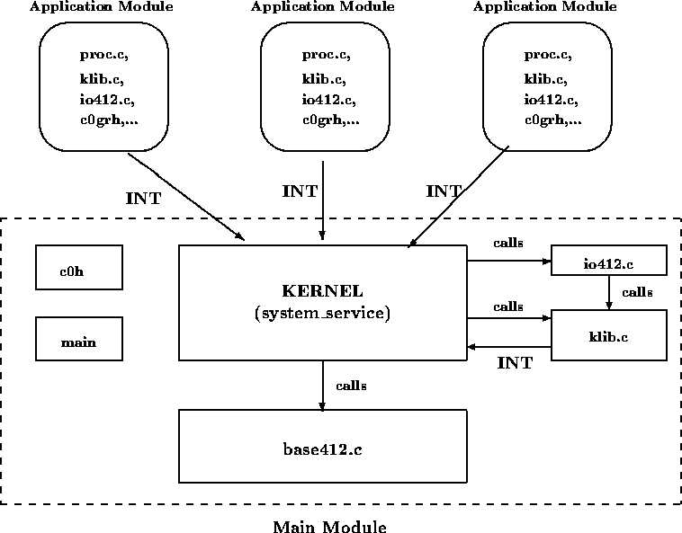

Project 4: Loading and Executing Modules
Due: April 24, 1996, in recitation

In this project we dynamically load application modules from disk. This involves a new system architecture, which is illustrated in the figure above. As can be seen, there is now one main() module, containing the kernel and associated files, as well as many application modules. Each module is separately compiled into an individual executable file.
To enable this effort, we have provided the following new files:
When linking an application module, the order in which you specify the object files matters. Here is a generalized makefile rule that produces an application module from a .c file (the dollar signs indicate special built-in make variables):
.c.mod:
bcc -v -mh -c $<
tlink /v c0grh $*.obj klib io412, $*.mod, $*, emu mathh ch
The link command for your kernel should have the form below, with c0h coming first and including both base412 and io412:
tlink /v c0h base412 io412 ..., myos, myos, emu mathh ch
Each application file must contain a special process (function) called Proc(), which is the module's sole public entry point.
If you have not already done so, split your kernel into two groups of files. The first group (which we call klib.c) contains the system calls directly callable by application processes. These do not include System_service(), however. The second group (which we call kernel.c) contains System_service(), those functions which are only invoked by System_service() and all ISRs.
Put_char() should be implemented as a system call just like Proc_start(), etc. It should be in klib.c and it should generate an interrupt to System_service(). Otherwise, in each of the modules the Cprintf() in io412.c would refer to a Put_char() which is not the one we have implemented (since the modules are linked seperately).
The reason for this separation is that we want only one kernel, while the function interfaces for system calls (such as Proc_start()) must be linked in with every application module.
To verify that you have created the files properly, test out an old application (using only the main module). Make sure to link in io412.c and base412.c, and not the obsolete cmsc412.c.
In this project, application processes will now be allowed to dynamically allocate and free memory. You will write the following system calls (to be written in klib.c).
void *Kmalloc(int numBytes); /* Request numBytes of memory. */ void Kfree(void *ptr); /* Release a segment pointed to by ptr. */
These functions simply generate interrupts to system service, which in turn directly calls Safe_malloc() and Safe_free(), respectively.
The new kernel will now be able to open an application module's file, allocate memory for it, load it into memory, initialize the module, and finally, issue a Proc_start() for the Proc() function in the module. Accomplishing these tasks requires adding new system calls, as well as modifying existing parts of the kernel.
For the sake of bookkeeping, the kernel keeps a list of all modules currently residing in main memory. Each node in the open module list (OML) should contain at least the following fields:
| File name |
| Start address for module |
| End address for module |
| Address for "Proc" function |
| Reference Count (initially 0) |
| Address for "Module_init" function |
The start address must be the pointer returned by Safe_malloc(), as that is the only one that can be freed by Safe_free(), which expects a tag above the pointer. The filename is the DOS name of the module, and the Proc() address is a pointer to its Proc() function. While there may be other local functions that can serve as code for process in the module, Proc() is the only process that will be visible to the outside world. The reference count denotes the number of processes executing code in the module.
One may still wish to have the Init() process (and other processes) reside in the main() module. If so, the module list should be initialized with a single node in it, which represents the main module. The filename in this node can be set to "_main". The start address should be a pointer to the first process lexically appearing in the main module, and the end address should point to the last process. The Proc() address should just be the start address of the Init() function.
The PCB structure should contain a field that contains the filename (to be referred fn) of the PCB's process module.
The PROC_START code must now use the process address argument to ensure that the referenced module is resident. First, the fn field of the running PCB is obtained. Then, the node corresponding to the fn is found in the OML. If the process address falls between the start address and end address for this module, we know that the process resides within the current module. Ergo, we know that the module is resident. In this case, the reference count in the node is incremented, and a copy (made with Safe_malloc) of the same fn is placed in the new PCB. When comparing pointers (e.g., p < q), you must convert them to 20-bit addresses and compare them as longs, not pointers. This is because of bugs in the compiler's handling of pointer comparisons. (You may wish to verify if this is still the case in Borland 4.5).
Otherwise, the new process must be in another module. Recall that the only entry point into each module is the Proc() function, the address for which is stored in the module's OML node. This being the case, the OML is searched for a node with its Proc() field equal to the process argument. If one is found, the node's reference count is incremented, and the fn is placed in the new PCB. Make sure that you make a copy of the filename in the PCB of a new process during Proc_start, just as you did before for argv.
If neither of the above cases is true, we know that the module is nonresident (i.e., not loaded into memory). In this case an error should be returned by Proc_start() (e.g., a pid of -1).
Obtain the fn from the current PCB, and retrieve the corresponding OML node. Then, decrement the node's reference count. If it is now 0, perform a Kwakeup on the address of the node (see below).
The "top" level of this process is initiated by the following new kernel call:
typedef (*Procptr) ( int, char ** ); /* Load module into memory and return its start address */ Procptr Load_module( char *pathname );The argument "pathname" is the name of the file to be loaded, which should be in standard DOS format. The function generates an interrupt to System_service, which loads the new module into memory. System_service() then passes back to Load_module() a pointer to the module's Proc() function. This pointer, in turn, is passed up to the caller of Load_module().
Recall that when a function's return value is a pointer, the segment is passed back in DX, while the offset is passed in the AX register.
Since loading the module requires about 30 lines of C code, the code should not be within the body of System_service(). Instead, System_service should pass the module's pathname to an auxiliary function, Kload_module(), which should be local to the kernel:
Procptr Kload_module( char *pathname );Kload_module() will load the module and update various data structures as needed. It returns the address of Proc() back to System_service (which then returns it to the system call, Load_module()).
We provide three new functions to help do the disk IO, which can be found in base412.c.
int Open_exe(char *pathname, long *hsize);
/* Opens an .exe file with name pathname, puts the _header_ size into */
/* hsize and returns a file descriptor. Returns -1 on io error (file */
/* not found, etc.). If file is not an exe file, -2 is returned. */
int Read_exe(int fd, unsigned pos, unsigned len, void *buf);
/* Reads len bytes from .exe file, starting at position pos, into */
/* buffer. Returns the number of bytes read. On error, returns -1. */
int Close_exe(int fd);
/* Closes an open .exe file. On error, returns -1. */
Executable files are separated into two contiguous
parts: the header, followed by the code.
Note that Open_exe() returns the size of the file's header. The
header itself contains the actual size of the entire file, including
the header.
The loading/locating algorithm contains the following steps:
First compare the requested filename against all of those already in the OML. If a node for it exists, simply return the Proc() address field from the OML.
Otherwise, create a new OML node for the new module, put it on the OML list and initialize its fn field.
Then, call Safe_malloc() to get a buffer for the header. Since all of the header fields are 16 bits wide, it is a good idea to declare the buffer of type unsigned *(). Then, using Read_exe(), read the header into the buffer.
A module's header has the following format (entries marked with * are used in this project).
Bytes Description ------ ----------- 00-01 File type 02-03 * Number of bytes in the last block of the file. 04-05 * File size in 512-byte blocks, including the header. 06-07 * Number of relocation table items. 08-09 Header size in 16-byte paragraphs. 0A-0B * Number of 16-byte paragraphs that must follow module in memory. 0C-0D High/Low loader switch. 0E-0F Stack segment. 10-11 Stack offset. 12-13 Checksum. 14-15 * Relative offset of init code (if start of code is at CS=0, IP=0). 16-17 * Relative segment of init code (if start of code is at CS=0, IP=0). 18-19 * Offset of relocation table with respect to start of header.
First, we must calculate the amount of space needed, in bytes. The total is
<num of bytes is last block of file> (1)
+ (<num of blocks> - 1) * 512 (2)
+ <num of paragraphs at end> * 16 (3)
+ 15 (4)
- <size of header> (5)
----------------------------------------
<number bytes necessary>
Lines (1)-(2) are obvious. Line (3) is needed for uninitialized
data following the code.
Line (4) is due to a technicality: the start address of the code must be
on a segment boundary. This means that its 20-bit address must
have the lowest 4 bits equal to 0. Thus, regardless of the
address returned by Safe_malloc(), we must have sufficient
room to load the code starting on the first segment boundary.
If Safe_malloc() returns a pointer p, the first segment boundary address is startseg:0, where
/* Make twenty-bit paragraph address, and then get segment part. */ startseg = (((long) FP_SEG(p) << 4) + FP_OFF(p) + 0x0F) >> 4Thus, startseg:0 is the start location for the code to be read in via Read_exe(). After the code is read in, the file should be closed.
At this point, the start and end address fields can be filled in the OML node. (Make sure that the start address is p, and not startseg:0.)
Each relocation record is 32 bits wide, and gives the location of the segment part of some address in the code. To calculate the true location with respect to the code buffer, extract the offset and segment parts from the relocation record, and calculate the resulting 20-bit address (as shown below). This number gives the offset, with respect to the start of the code, of the address to be patched.
unsigned long x, seg, off; seg = ((unsigned long) FP_SEG (addr)) << 4; off = (unsigned long) FP_OFF (addr); x = seg + off;
For example, assume that the instruction CALL 0012:292F is in the code. Then, there is some relocation record that gives the byte offset, with respect to the start of the code, of the 0012 segment part. Since all addresses in the file are relative to 0000:0000, one must change 0012 to 0012 + startseg() (recall that the start offset is always 0).
To relocate all addresses, first use the relocation table offset to find the relocation table. Then, simply relocate every address listed in the table. Make sure to make all variables of type char unsigned. Shifting a signed character produces incorrect code.
There is an initialization function in each code module, which must be called to set up the data areas. This function has the added benefit of returning a pointer to Proc() (in DX and AX), which is exactly what must be returned from Kload_module() itself.
Note that the init function's address is listed in the header (both its relative segment and offset parts). If a (unsigned) character pointer codeptr points to the start of the code (i.e., startseg:0), then the initialization function is at
Module_init = codeptr + (segment_part << 4) + offset_partwhere Module_init is defined as follows:
Procptr (*Module_init)(unsigned int, void (*), void (*));At this point the header buffer can be freed, since it is no longer used. Then the initialization function can be called as follows, and the return value should be put in the Proc() field of the OML node.
result = Module_init(_psp, Proc_term, Proc_term)Finally, the same result should be returned as the result of Kload_module().
_psp is the segment of the program segment prefix, a block of memory used by DOS (mainly for file handling). The second argument to Module_initis the function to use for _exit; the third is the function to use for abort.
For our purposes, closing a module consists of freeing up the memory area that the module occupies. This is done by the following kernel call:
void Close_module(char *pathname); /* Close the module. */Again, the function generates an interrupt to System_service, which then calls an auxilary function
void Kclose_module(char *pathname);First, the OML is searched, looking for a node with the correct filename.If the file is not in resident in memory, simply return.
Otherwise, retrieve the proper OML node. If the reference count is 0, the memory can be reclaimed. However, if the count is not 0, it means that some process is still using the module. In this case, call Ksleep() on the OML node. When Proc_term() finally decrements the count to 0, a corresponding Kwakeup() will be called.
At that point, make sure that the OML node for that filename still exists, in case another process has closed it first. You can do so using a loop.
Reclaim the module's memory by simply calling Safe_free() on the OML node's start address. Then call the OML node's Module_init function with 0 for all three parameters to make it clean up. Finally, free up the memory of the OML node itself.
You should load init.mod as your first module and Proc_start() the Proc() of this module. This module may Proc_start() other processes within itself or it might load another module and Proc_start() the Proc() of that module, etc. So, we can test your code by substituting our init.mod.